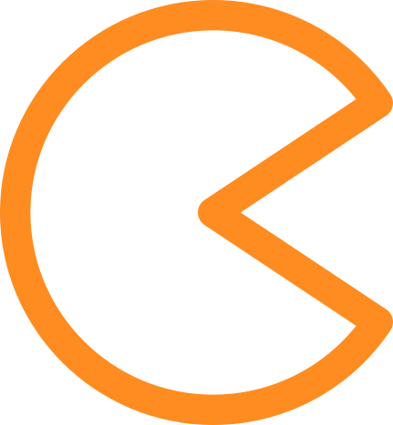
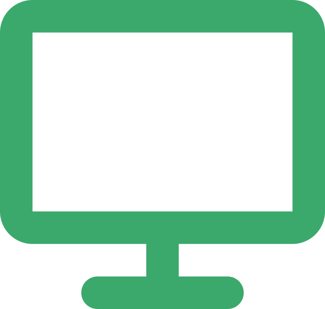
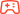
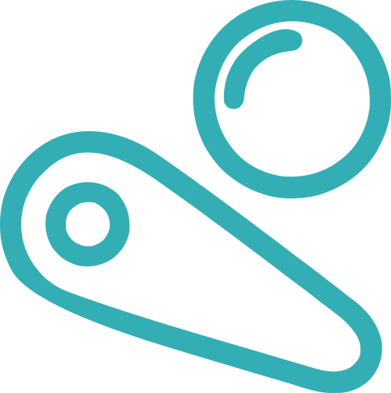
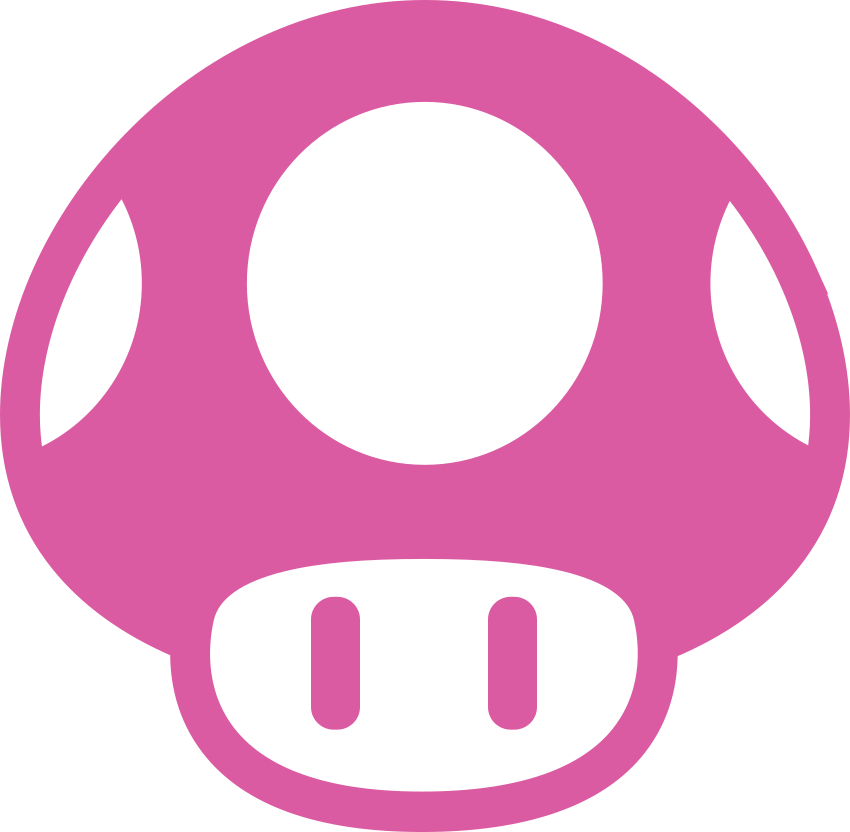
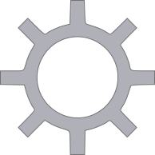

<div class="ns2-ui {options:theme_style}" data-riescade-view="system">
  <link rel="stylesheet" href="./assets/css/switch2.css" />

  <!-- TOP BAR -->
  <header class="ns2-topbar">
    <div class="ns2-profile">
      
    </div>

    <div class="ns2-status">
      <span class="ns2-clock"><riescade-clock format="hh:mm A" /></span>

      <div class="ns2-icon wifi">
        
      </div>

      <div class="ns2-icon battery">
        
      </div>
    </div>
  </header>

  <!-- GAME TITLE -->
  <div class="ns2-current-game">
    <div class="ns2-dot"></div>
    <span>{system:fullName}</span>
  </div>

  <!-- GAMES ROW -->
  <main class="ns2-carousel">
    <riescade-system-carousel 
      type="horizontal"
      items-count="5"
      items-count-selected="1"
      item-class="ns2-game"
      item-marquee="true"
      item-marquee-source="./assets/logos"
      item-background="true"
      item-background-source="./assets/arts"
      media-source="theme"
      logo-scale="1"
      logo-selected-scale="1"
      gap="20"
    />
  </main>

  <!-- BOTTOM MENU -->
  <footer class="ns2-bottombar">
    <div class="ns2-menu-pill">
      <div class="ns2-menu-item switch-online {system:hardwareType == 'all' ? 'active' : ''}">
        
        {global.cheevos == '1' ? '<div class="online-indicator"></div>' : ''}
      </div>
      <div class="ns2-menu-item {system:hardwareType == 'arcade' ? 'active' : ''}">
        
      </div>
      <div class="ns2-menu-item {system:hardwareType == 'computer' ? 'active' : ''}">
        
      </div>
      <div class="ns2-menu-item {system:hardwareType == 'console' ? 'active' : ''}">
        
      </div>
      <div class="ns2-menu-item {system:hardwareType == 'extension' ? 'active' : ''}">
        
      </div>
      <div class="ns2-menu-item {system:hardwareType == 'pinball' ? 'active' : ''}">
        
      </div>
      <div class="ns2-menu-item {system:hardwareType == 'port' ? 'active' : ''}">
        
      </div>
      <div class="ns2-menu-item {system:hardwareType == 'portable' ? 'active' : ''}">
        
      </div>
      <div class="ns2-menu-item">
        
      </div>
      <div class="ns2-menu-item">
          
      </div>    
    </div>
  </footer>

  <!-- BOTTOM LEFT -->
  <div class="ns2-switch-logo">
    
  </div>

  <!-- BOTTOM RIGHT -->
  <div class="ns2-actions">
    <span><b>+</b> Options</span>
    <span><b>A</b> OK</span>
  </div>
</div>